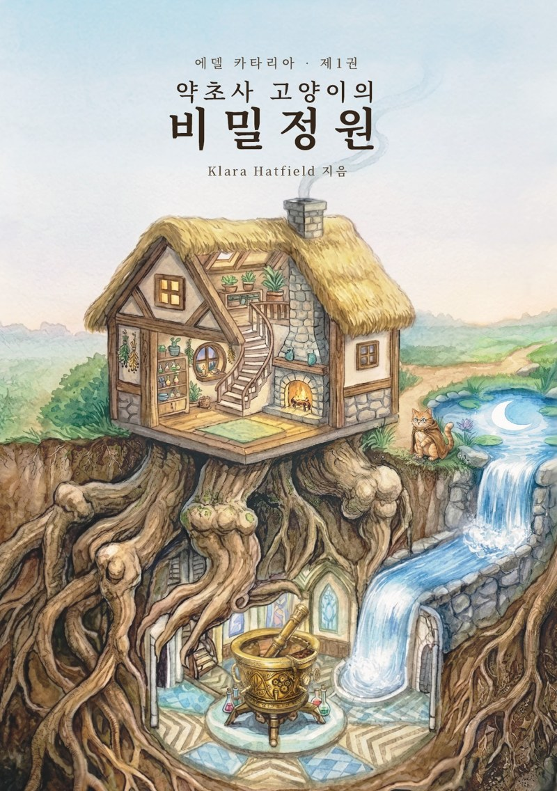
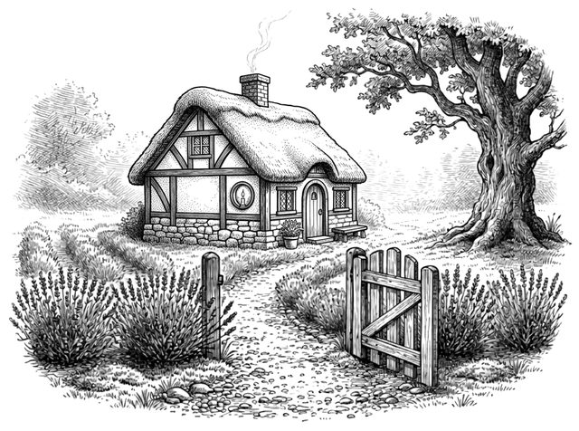
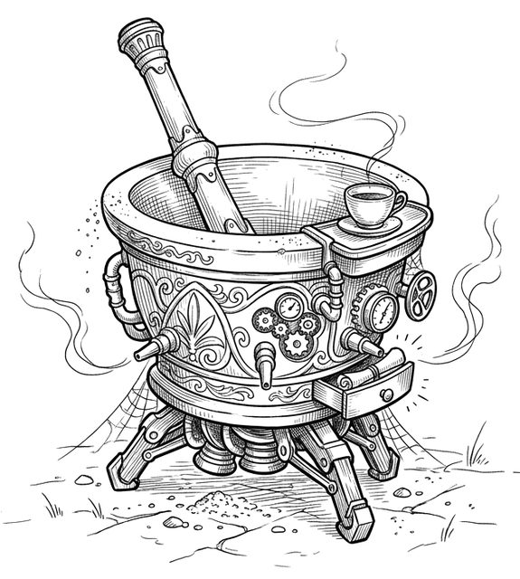
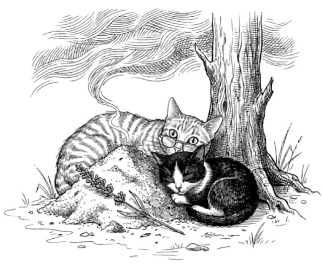
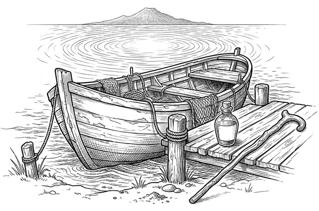
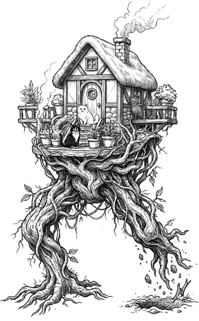

바바의 곁에는 세 제자가 있습니다. 감으로 먼저 아는 루나, 지켜보고 스스로 고쳐 나가는 아쿠아, 스승의 일지를 베껴 쓰며 자기 글을 찾아가는 잉크.
정원에는 저마다의 사연을 안은 손님들이 찾아옵니다. 늙은 어부, 길드마스터, 귀부인, 떠돌이 약초사…
그리고 어느 날, 상자 속 태엽 심장이 째깍거리기 시작합니다.
바바가 삼백 년 전 서쪽 숲에 두고 온 일이 마침내 돌아온 것입니다.
The Book
Aethel Cataria, Book One
삼백 년을 산 고양이 약초사와 세 제자, 그리고 상자 속 태엽 심장의 이야기.

Novel · 에델 카타리아 1권
Klara Hatfield
안개가 낮게 깔리는 라군 곁, 작은 코티지와 정원이 있습니다. 진저색 고양이 약초사 바바는 그곳에서 삼백 년 동안 약초를 기르고 물약을 지어 왔습니다.
사건을 요약하는 대신 감정에 머무는, 어른을 위한 다크-코지 판타지 장편소설입니다. 아이와 함께 읽어도 괜찮은 수위로 썼습니다.
장편소설다크-코지 판타지펜화풍 일러스트 30컷A5 · 182쪽
First Page
이곳의 안개는 느리게 걷힌다. 언제나 느리게.
나는 바바다. 이곳을 돌보는 관리인이다.
그리고 당신은, 정원이 아직 내게 알려 주지 않은 어떤 이유로 이곳까지 오는 길을 찾아냈다.
— 프롤로그 「초대」에서
Story
바바의 곁에는 세 제자가 있습니다. 감으로 먼저 아는 루나, 지켜보고 스스로 고쳐 나가는 아쿠아, 스승의 일지를 베껴 쓰며 자기 글을 찾아가는 잉크.
정원에는 저마다의 사연을 안은 손님들이 찾아옵니다. 늙은 어부, 길드마스터, 귀부인, 떠돌이 약초사…
그리고 어느 날, 상자 속 태엽 심장이 째깍거리기 시작합니다.
바바가 삼백 년 전 서쪽 숲에 두고 온 일이 마침내 돌아온 것입니다.
Characters

삼백 년 동안 정원을 지켜 온
진저색 고양이 약초사

감으로 먼저 아는,
몸이 앞서는 제자

지켜보고 스스로 고쳐 나가는,
수문을 지키는 제자

스승의 일지를 베껴 쓰며
자기 글을 찾아가는 제자
Illustrations
프롤로그부터 에필로그까지, 각 장의 첫머리에 펜화풍 일러스트 30컷을 담았습니다.





Contents
Details